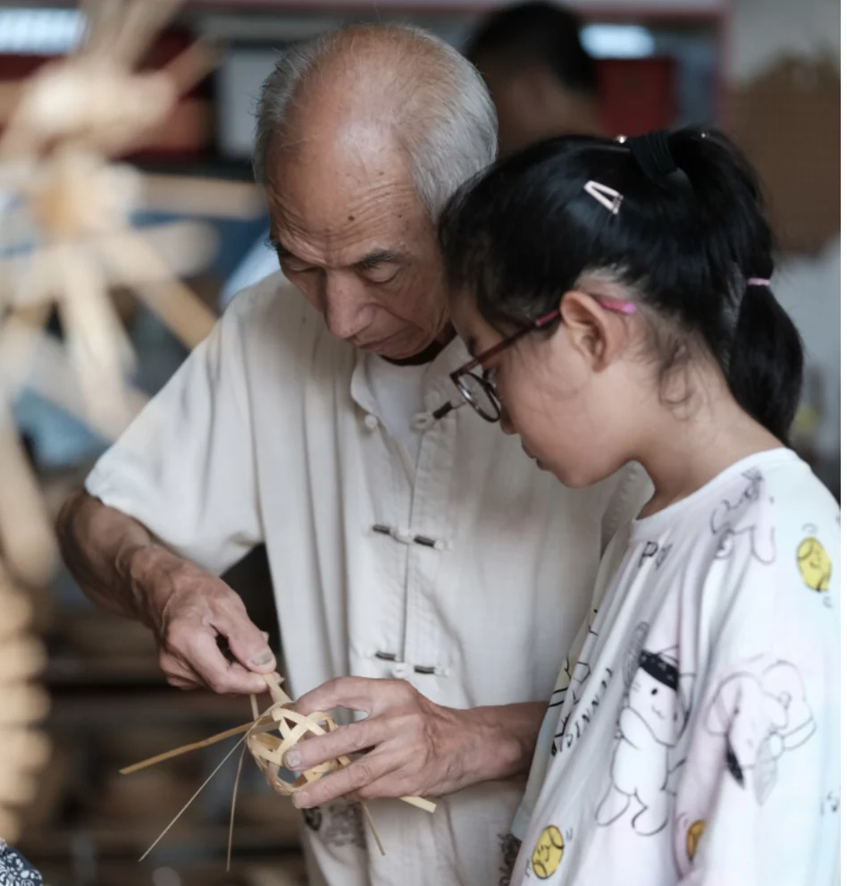

浙江 · 安吉 · 章村 / 手艺里的乡土
山野有艺，
日常有故事。
一缕彩线，一片竹篾，一张笋壳，一段草木香。
跟着四位山乡伙伴，打开文创背后的手艺故事，
把章村的记忆，带进你的日常。
一物一码 · 扫码读故事 · 让手艺与生活相遇


一件文创 · 一段与章村的相遇畲织 / 竹编 / 笋壳画 / 畲香从手心的小物，读懂山乡的故事
Four arts, four stories
四门手艺，四种相遇。
点开一张故事卡，认识材料，也认识手艺。
如果你手里已有文创，扫描产品上的二维码就能直达。

竹编传习 · 项目资料图片
From the mountains of Anji
故事从章村出发，
在一双手里延续。
「手艺，是人与山野的对话。」
章村在浙江安吉。这里的畲乡文化、竹乡生活，为“章村四艺”提供了创作的起点。从郎村的畲族彩带，到日常可见的竹编器物，材料经过双手，留下生活的印记。
我们把畲织、竹编、笋壳画与畲香编成四篇小小的故事。用年轻的 IP 形象讲述手艺，让一次购买、一次赠礼，也成为重新认识乡土的机会。